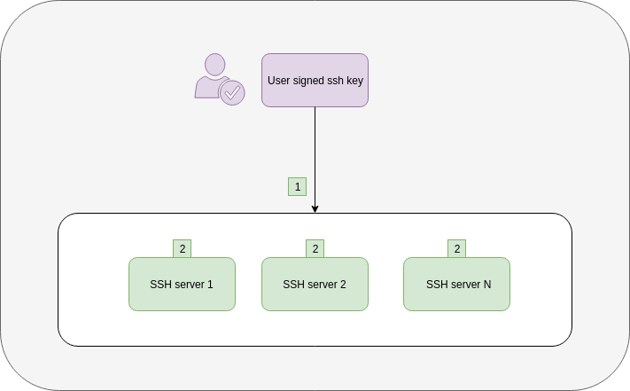

Signmykey
signmykey
What is it ?
Signmykey is a server and a client used to sign SSH keys using Hashicorp Vault.
It helps you to delegate the signing part and the principals in your organization with the same workflow.
Principals are the roles allowed within an SSH account, they are based on groups provided in Signmykey.
It can use LDAP or OpenID Connect ROPC as authentication/principals backends.
What do you need ?
- One authentication system, choose between:
- a Vault instance, see Howto
- a signmykey host
How does it work ?
Signmykey workflow with LDAP

- The user uses
signmykeythen enters its credentials, Signmykey client sends to Signmykey server user credentials and user SSH public key - Signmykey server sends user credentials to LDAP server (Authenticator)
- LDAP server returns validation to Signmykey server if successful
- Signmykey server sends username to LDAP server (Principals)
- LDAP server responds with user groups as Principals
- Signmykey server asks Vault to sign the public key with groups as principals
- Vault gives back the signed key to Signmykey server
- Signmykey server gives back the signed key to the user
Signmykey allows you to let your LDAP users to sign theirs SSH keys with principals using the memberOf attribute.
Signmykey workflow with OpenID Connect ROPC
OpenID Connect ROPC stands for OpenID Connect “Resource Owner Password Credentials” grant flow.
- The user uses
signmykeythen enters its credentials, Signmykey client sends to Signmykey server user credentials and user SSH public key - Signmykey server sends user credentials + OIDC client ID and secret to Keycloak using Token Endpoint (Authenticator)
- Keycloak server responds with an authentication token if successful
- Signmykey server sends authentication token to Keycloak using Userinfo Endpoint (Principals)
- Keycloak server responds with user groups as Principals
- Signmykey server asks Vault to sign the public key with groups as principals
- Vault gives back the signed key to Signmykey server
- Signmykey server gives back the signed key to the user
SSH workflow
This SSH workflow is independent of the chosen Signmykey workflow.

- The user enters
ssh <signmykey_user>@<server>from his terminal - The SSH server verifies that the certificate
- is signed with the CA installed locally
- is valid
- has the correct principals in /etc/ssh/authorized_principals/ files